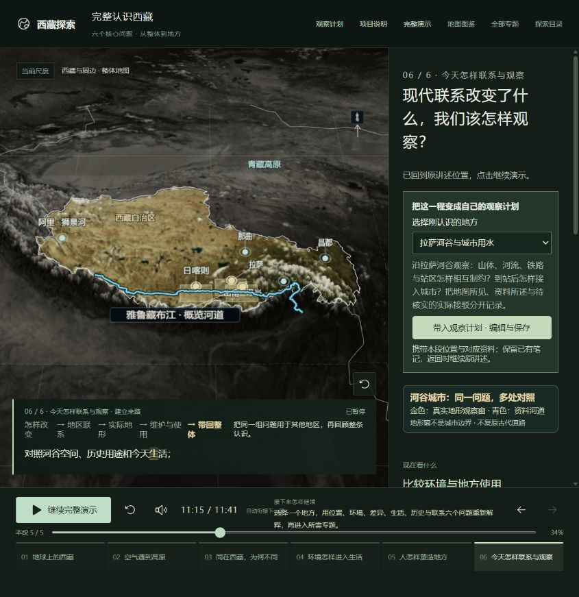

1. 地球上的西藏
- 逻辑
- 海陆与大气背景 → 亚洲 → 中国 → 自治区与自然高原；位置接到外界影响。
- 保留的收口标准
- 在同一地球上辨认位置层级，区分行政范围与自然高地；回到整体不丢目标。
- 本轮实际检查与限制
- 本轮已见完整地球与亚洲/国家/自治区范围、逐词字幕和自然衔接；未新增观看者指认或复述证据。
2026-10-18 · V1-main-20261018.1 · 实测代码 7f11896
六章、21段、11:41。从首页自然播放到结束，完成比较恢复与观察计划保存、刷新、返回。
应用入口仍直接进入效果演示，本页只是项目说明。
完整地球定位 → 全球来流与高原 → 地区差异 → 条件、设施与人的生活 → 历史形成及保护延续 → 交通、地方观察与可保存计划。整体到局部，再回到整体；真实资料与原理示意分清。
建议冻结可用V1，停止加模型、加时长和整场美容循环。不要将“还能更漂亮”继续升级为本版阻断，也不把功能检查冒充所有体验已通过。
| 操作 | 状态 | 观察结果 |
|---|---|---|
| rotation | 已检查 | 同进度去掉/加入自转项；讲述暂停在0.213，恢复约0.218，原地球纬圈阶段恢复。 |
| moisture | 已检查 | 气团位置0.85保持相同，较多/较少水汽的云雨与对照表改变；主进度0.745不动，恢复较多水汽并继续。 |
| month | 已检查 | 冬季讲述中改七月；数值改变，恢复一月与原句，主进度0.413→0.425。 |
| life-section | 已检查 | 林芝东西→南北剖面，样本3780→5030米；恢复东西剖面与原句，0.811→0.820。读数是当前样本，不是城市海拔。 |
| irrigation | 已检查 | 重新对照；仅开闸推进无补水，清渠后可补水，关闸保留已完成部分；原句0.573→0.582恢复。 |
| protection | 已检查 | 原有供灯关系/空间分开在同图改变灯光位置与解释；主进度0.620不变，恢复原保护段。 |
| bridge | 已检查 | 拿掉/接回桥改变桥面和接续状态；恢复原段0.496→0.503。截图未连续跟踪每一辆车。 |
| rail | 已检查 | 跨河节点3.39公里→前进500米到3.89公里；恢复原隧道讲述，原进度0.541→0.543。 |
| plan | 已检查 | 末章0.344带入拉萨观察问题和3项资料；添加临时笔记、保存、真实reload后逐字一致。恢复原笔记后保存返回，仍为原段0.344、同一句/活动字，继续至自然结束。随后重进计划确认原笔记已恢复。 |
没有跳章节或拖主进度快进替代全程。55条离散记录与关键截图，非逐帧录屏；本轮浏览器捕获的警告/错误日志为空。

新增事实、模型、更高清资料、移动端或完整旅行服务均另立需求，不延长本版。系统声音听审和正式理解验收保持独立记录，不要求当前用户逐项陪测。
本轮浏览器记录 · 当前六章收口记录 · 固定版本基线 · 修复前排查（历史） · 原始思路与阶段记录（历史） · 首次观看者协议（未完成）